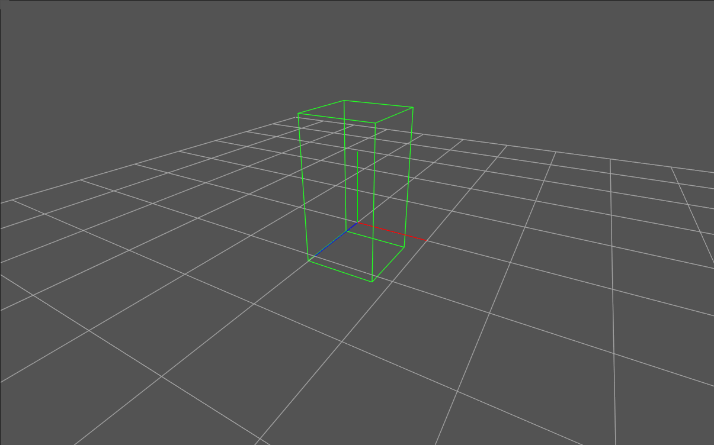
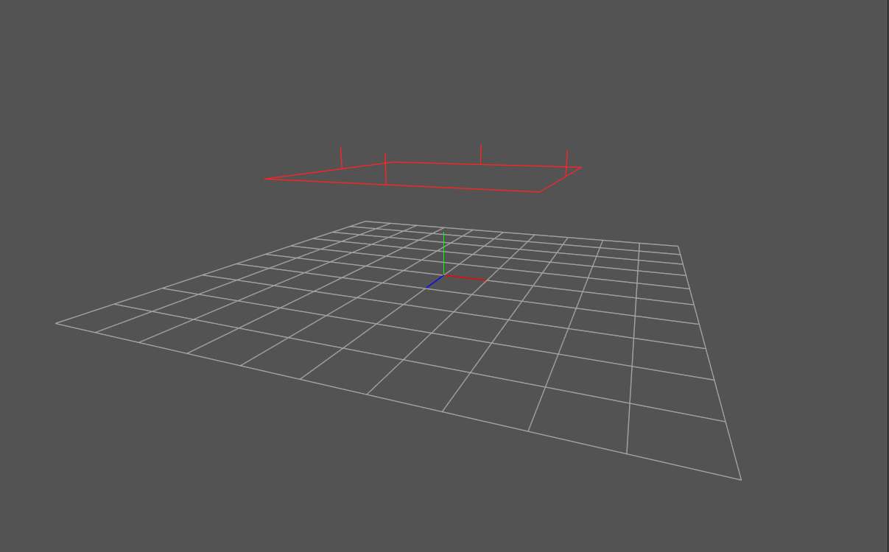
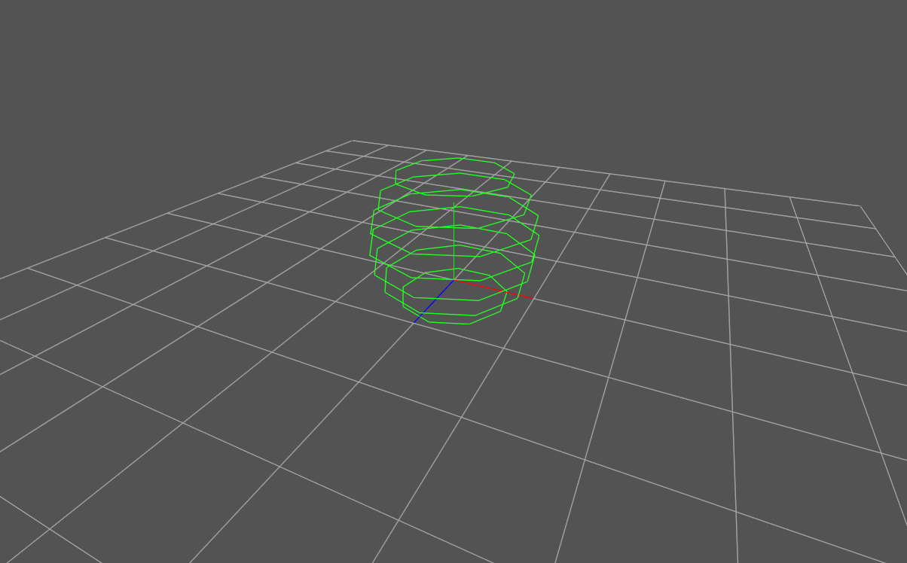

销毁规则¶
概述¶
销毁规则允许你指定一块区域，这块区域会销毁进入其中的粒子。 如果某个粒子有淡出效果，在粒子被移除前会播放淡出效果。
在编辑器中，你可以选择节点树中的节点，预览其销毁规则的形状。
盒子¶
销毁盒子内部或外部的粒子。
中心¶
盒子的中心位置。
尺寸¶
盒子的表面相对于中心的距离。 例如，如果尺寸设置为(0.5, 0.5, 0.5)，则盒子的长宽高都为1。
销毁内部¶
如果勾选，会销毁进入盒子内部的粒子。 如果不勾选（默认），会销毁跑到盒子外部的粒子。
应用缩放和旋转¶
如果勾选（默认），盒子会随特效旋转和缩放。 如果不勾选，盒子将不会随特效旋转和缩放。
平面¶
一个平面将空间划分为两侧，销毁其中一侧的粒子。
轴¶
定义平面法向沿着哪个坐标轴。 选择相反的坐标轴会改变粒子在哪一侧被销毁。 例如，如果轴设置为+Y，会销毁平面上方的粒子，如果设置为-Y，会销毁平面下方的粒子。
平面沿轴的偏移¶
定义平面在轴上的位置。 例如，轴为+Y，平面沿轴的偏移为1.0，那么会销毁Y坐标大于1.0的粒子，如果轴为-Y且平面沿轴的偏移为1.0，则会销毁Y坐标小于-1.0的粒子。
应用旋转和缩放¶
如果勾选（默认），平面的方向会随粒子的方向改变，而且平面的偏移会随着粒子的缩放改变。 如果不勾选，平面的旋转和偏移都不会变化。
球¶
销毁球内部或外部的粒子。
中心¶
球的中心。
半径¶
球的半径。
销毁内部¶
如果勾选，会销毁进入球内部的粒子。 如果不勾选（默认），会销毁跑到球外部的粒子。
应用旋转和缩放¶
如果勾选（默认），球的位置会相对于特效的原点跟随特效旋转，球的半径会随特效的缩放而缩放。 如果不勾选，球的位置和半径都不会变化。